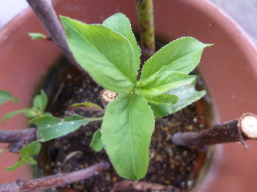
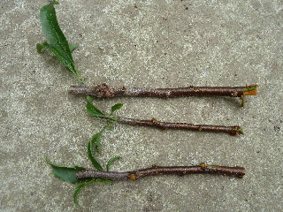
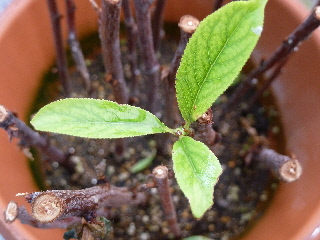
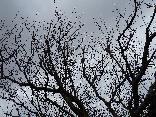
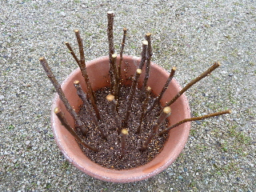
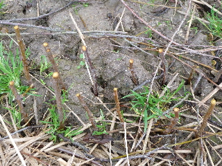

遊びで植物を育てよう
2012/09/08
スモモまた失敗。
また枯れちゃいました。
【すももTOP】 【果物TOP】 【園芸TOP】
2012/07/28
スモモは新芽が出て来ました。
挿し木から、新しい葉っぱが出てきました。

新緑の葉っぱは綺麗でいいですね。
前回もここまでは順調に育っている気がしていたんですが、その後葉っぱが落ちて枯れてしました。
今回はどうなるでしょうか？
【すももTOP】 【果物TOP】 【園芸TOP】
2012/07/08
スモモの挿し木再挑戦。
スモモの挿し木をまたやってみます。

今度は木の太さを太めにしました。
今度こそ育って欲しいです。
【すももTOP】 【果物TOP】 【園芸TOP】
2012/06/30
すももは1本しか残っていません。
沢山挿し木したスモモですが、今葉っぱが付いているのはこの1本だけになりました。

なんででしょうね？
ちょっと前までは5本はあったんですが、急に1本だけになってしまいました。
原因が分からないので、最後の1本も突然枯れてしまうんじゃないかと思ってしまいます。
また追加して挿し木しようかな。
【すももTOP】 【果物TOP】 【園芸TOP】
2012/03/18
すももの木を剪定して挿し木しました。
すももの木が伸び放題だったので、剪定しました。

切った枝を鉢に沢山挿しました。

余ったのは、地面にプスプス挿しました。

沢山やったので、何本かは生き残って欲しいです。
切った枝をただ挿しただけで、薬とかは何もしていないです。
どれくらいたったら根が出て、葉が出るんでしょうね？
【すももTOP】
【果物TOP】
【園芸TOP】
畑仕事じゃないよ。
【おいしいものを食べよう。】【しっかり寝よう。】
【ソロ活をしよう!】【季節感のあることをしよう。】【動画視聴はほどほどに。】【当サイトの全てのコンテンツは無断転載禁止です。】